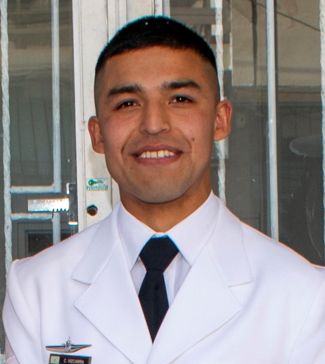

CARLOS RODRIGO VIZCARRA
DATOS PERSONALES:
Dirección: Adolfo Alsina 321.
Teléfono: 02236222100.
Fecha de nacimiento: 08 de Abril de 1992.
Edad: 30 años.
Estado civil: Casado
Número de CUIL: 20-35844325-4.
ESTUDIOS CURSADOS:
Educación primaria, lugar y título obtenido: E.E.P. N°4192 ¨Coronel Jorge E. Vidt¨, Gral. Mosconi (Salta)
Educación secundaria, lugar y título obtenido: E.E.T. N°3113 ¨Francisco Tobar¨, Gral. Mosconi (Salta). Técnico
Elecrónico.
Educación terciaria/universitaria, lugar y título obtenido: ESSA, Base Naval Puerto Belgrano (Bs. As.).
Técnico Superior electrónico en radiocomunicaciones.
CAPACITACIÓN COMPLEMENTARIA:
Técnico en reparación y mantenimiento de P.C. Instituto HILET.
Lugar y fecha: Mar del Plata, 23 de noviembre de 2018.
Community Manager. Instituto UCIP.
Lugar y fecha: Mar del Plata, 19 de noviembre de 2021.
Diseñador WEB y Diseñador Grafico. EFP 10.
Lugar y fecha: Mar del Plata, 11 de noviembre de 2022.
EXPERIENCIA LABORAL:
"MILLA NEUMATICOS". Sistemas de control e instalaciones. Desde marzo de 2022 hasta la actualidad
Hipermercado "MAKRO". Instalación de redes y cámaras de seguridad. Desde abril de 2017 hasta noviembre de
2020.
"Florida Premium Outlet". Mantenimiento de equipos de refrigeración y ventilación. Desde enero de 2015 hasta
enero de 2017.